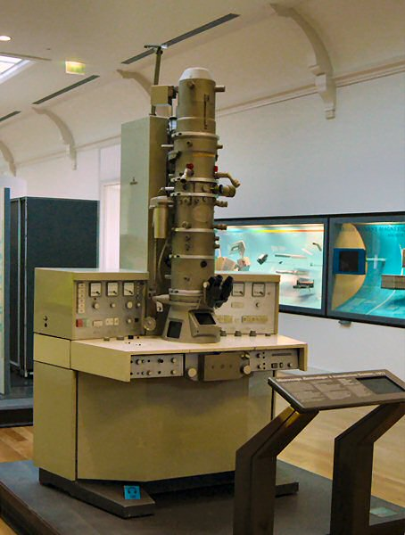
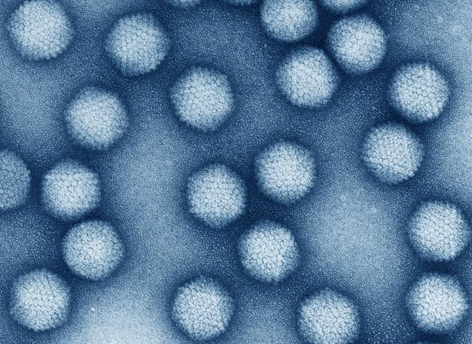
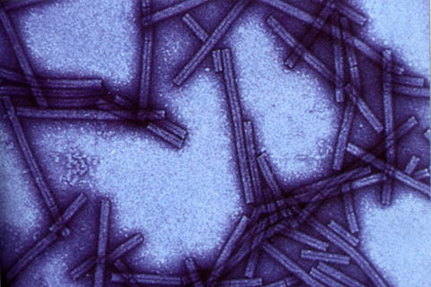
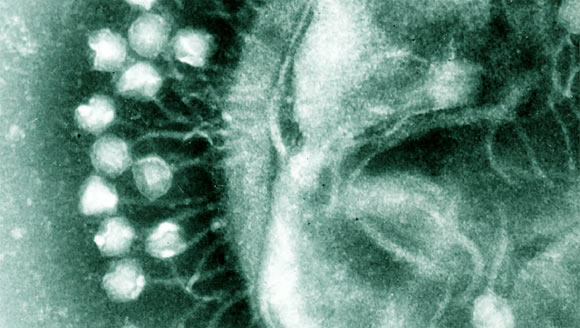
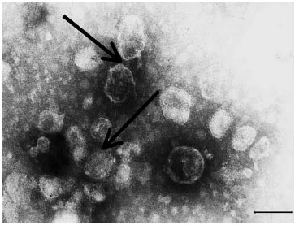
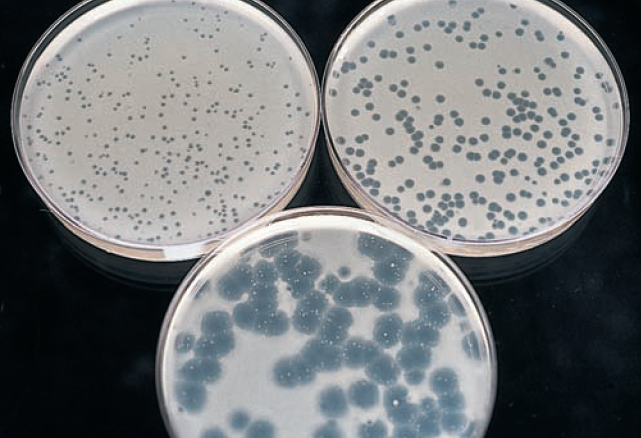

31 Oct 2025
After this session the students should be able to:
A 28-year-old woman presents with fever, fatigue, and a rash. These symptoms appeared two days ago. She recently returned from a tropical vacation.
👉 Task: Work in groups to diagnose the possible illness and suggest appropriate laboratory tests to confirm the diagnosis.
Key laboratory procedures:
    
| Type | Source & Characteristics | Typical Uses | Lifespan |
|---|---|---|---|
| Primary Cell Culture | Directly isolated from animal or human tissue; closely resemble normal cells | Virus isolation, vaccine production | Short (few divisions) |
| Diploid Cell Line | Derived from normal cells; maintain diploid chromosome number; limited subcultures | Diagnostic assays, research | Moderate (20–50 divisions) |
| Continuous / Tumor Cell Line | Transformed or cancer-derived; immortalized; easy to maintain; may have abnormal features | Routine virus culture, genetic studies | Long / Infinite |
| Method | Measures | Description |
|---|---|---|
| TCD₅₀ | Infectious virus concentration | Dilution causing CPE in 50% of cultures. |
| LD₅₀ | Virus lethality | Dilution lethal to 50% of animals. |
| ID₅₀ | Infectivity in vivo | Dilution infecting 50% of animals. |
| Plaque Assay | Infectious units (PFU/mL) | Count plaques for virus quantification. |

Enzymes and other proteins -> detected by biochemical, immunologic, and molecular biology
Viral proteins -> separated by electrophoresis -> identify and distinguish different viruses
Monoclonal or monospecific antibodies -> distinguishing viruses (antigens on cell surface or within cell) -> detected by immunofluorescence and enzyme immunoassay (EIA).
Virus or antigen released from infected cells -> detected by enzyme-linked immunosorbent assay (ELISA), and latex agglutination (LA).
Technique:
Modern molecular techniques for detecting viral genetic material:
further reading here
| Method | Pros | Cons |
|---|---|---|
| PCR | High sensitivity/specificity; detects low loads; rapid; quantitative | Equipment needed; contamination risk; detects dead virus |
| Serology | Detects past infection/immunity; inexpensive; easy | No current vs past distinction; cross-reactivity; delayed response |
| Genome sequencing | Identifies strains/variants; comprehensive; surveillance | Expensive; slow; expertise required |
| ELISA | Sensitive antigen/antibody detection; automated; high throughput | False positives/negatives; needs specific antibodies |
| Virus culture | Isolates live virus | Slow (days/weeks); biosafety; not all viruses grow |
| Electron microscopy | Direct visualization; identifies unknowns | Low sensitivity; expensive; not quantitative; limited use |
Diagnostic of: